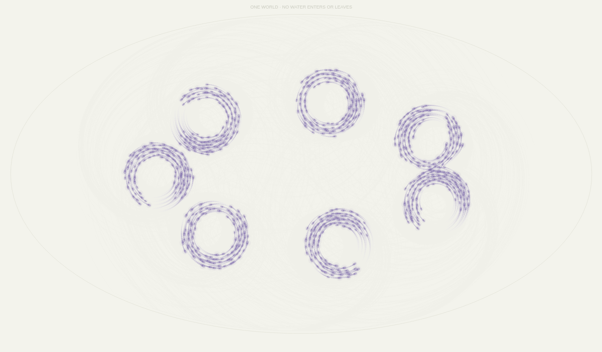
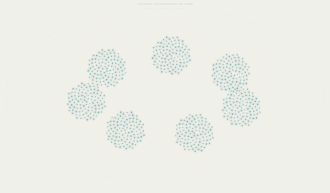
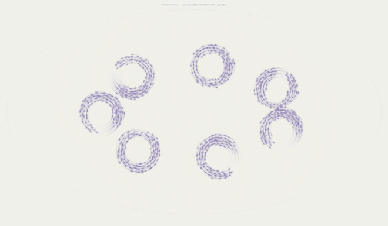
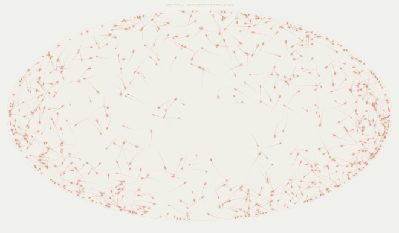
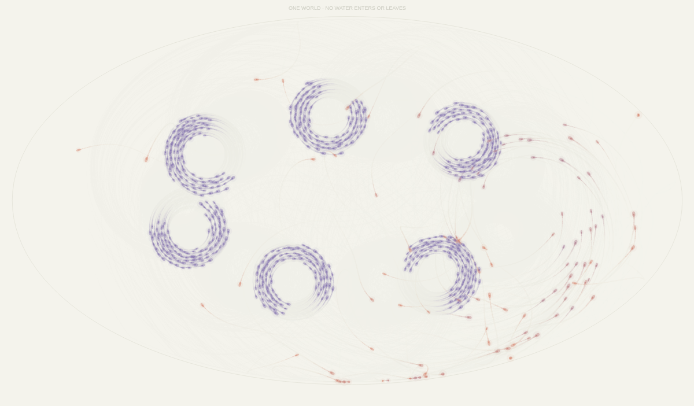
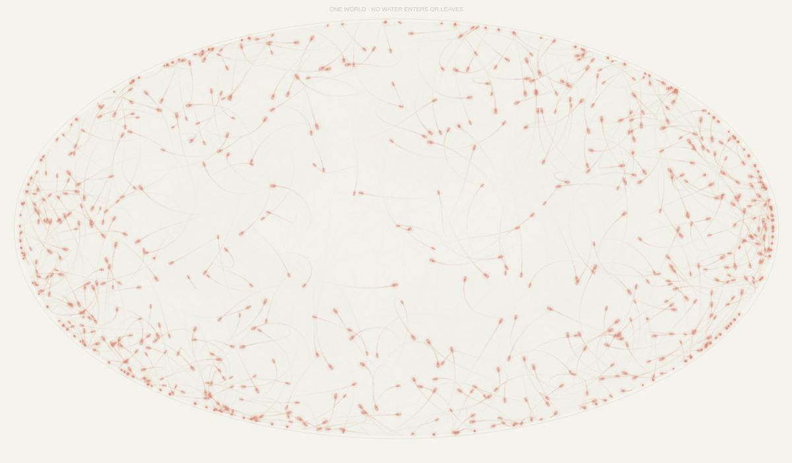
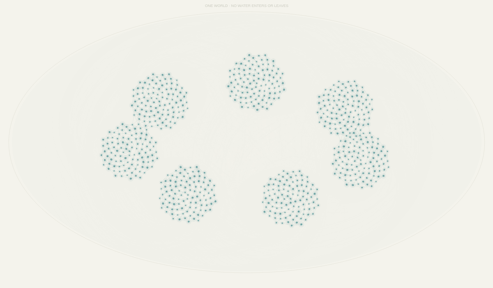
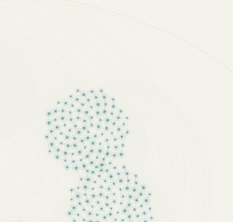
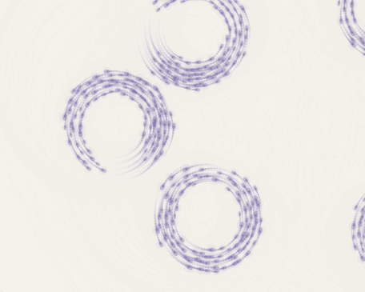
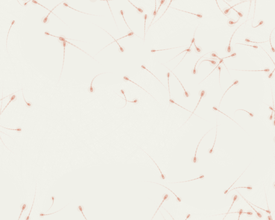

The same
water.
A closed world.
Three states.
The same matter.
Water changes its way of being together. The amount stays the same.
Enter the living world
What looks like loss may be a change in state. What looks like balance may still be fragile.
This world contains 720 small individuals. Each one stands for an equal unit of water. They stay inside one closed field. None are added or removed.
Temperature and sunlight change their behavior. The same individuals can connect, flow together, or spread apart. A state is shown through movement and relationships.
The project explores warming, changing water states, and the time a disturbed system needs to recover. It turns a large environmental concern into a small world that a visitor can touch.
This is an artistic model of water. Its behavior thresholds are designed for the experience; it is not a scientific climate forecast.
Three ways of being together.

A quiet structure.
In a cold world, individuals move towards shared resting places. Thin connections appear between close neighbors. The group becomes slow and stable.

A moving group.
At a middle temperature, individuals follow nearby movement and gather around moving centers. The groups keep changing, but stay connected through motion.

A wider field.
When individuals become warm enough, they leave the liquid groups. They move faster and spread through more of the field. The water is still here.
These images and short loops come from the completed p5.js simulation. The frames are cropped to focus on the living field.
- TemperatureChange the whole world's thermal conditions. Move left to cool it; move right to warm it.
- SunlightMore light adds a small warming influence and changes the pace of movement.
- Warm / CoolSelect a tool, then hold inside the field. Only nearby individuals are directly warmed or cooled. H and C also select the tools.
- PauseStop at a moment to look closely. Resume to let the same world continue. Space also pauses it.
The world stays at your chosen conditions. It does not run through an automatic hot-and-cold cycle.

The soft bodies suggest artificial life. Their pale colors and transparent layers make shared movement visible. The world feels alive because each individual responds to its neighbors and environment.
Teal suggests solid structure, violet shows liquid movement, and peach marks vapor. Colors blend as individuals change.
A trail shows where an individual has just been. Curved trails reveal flow; wider paths reveal dispersion.
Connections show nearby cold individuals forming a structure. As they warm, these links fade.
The edge gives the world a boundary. Individuals remain inside it, making the fixed total visible.
Layered transparency makes dense groups look different from scattered individuals.
The solid, liquid, and vapor counts change. Their sum always stays at 720.
Turning down the temperature does not put the world back together at once.
The critical change happens when individuals cross the vapor threshold. Liquid groups break apart. The amount of water stays constant, while its shared behavior changes.
After cooling, each individual loses heat over time. A trace of the earlier agitation also fades slowly. The groups need time to settle and reconnect. This threshold is reversible, but recovery is delayed.


Read these two moments as a sequence: the same world, after warming and then cooling.
The individual and the group.


